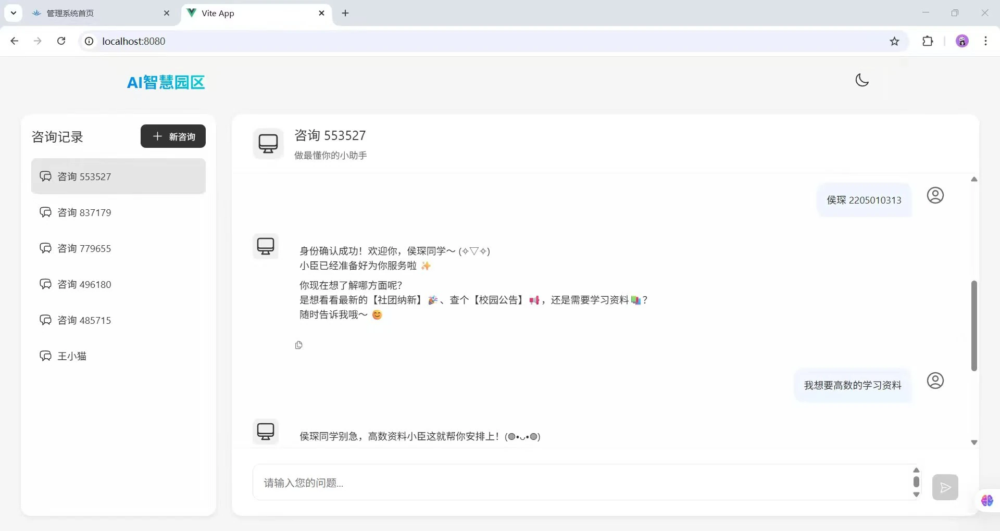

← 返回项目
AI Assistant
智慧校园 AI 助手
基于 RAG（检索增强生成）架构的校园 AI 问答系统。实现对课程信息、校园公告、办事流程等多源数据的语义检索与智能应答。我在实习期间作为后端核心开发者参与构建，负责数据服务模块开发、知识检索链路构建与系统优化。

// RAG 检索流程
用户请求 → 意图解析
→ 向量检索(Redis)
→ 上下文拼接
→ LLM 生成 → 应答
项目背景
校园信息分散在网站、公告栏和各个部门系统中，师生查找信息效率低下，主要面临以下问题：
- 课程信息发布不集中，学生需逐个平台查找，耗费大量时间
- 校园公告更新速度快，关键信息容易被大量通知淹没
- 办事流程不统一，师生需多次咨询相关部门，沟通成本高
为了解决上述痛点，团队决定构建一套基于 AI 的智能问答系统，将分散的多源校园数据统一接入、结构化处理，并通过语义检索与自然语言交互降低师生获取信息的门槛。
我的职责
作为后端核心开发者，我在项目中承担以下关键职责：
- 数据服务模块开发：负责多源校园数据（课程信息、校园公告、办事流程）的接入、清洗与结构化处理
- 向量检索链路构建：基于 Redis 向量库实现文档向量化存储与语义检索，打通 RAG 流程中的数据召回环节
- 上下文工程实现：完成请求解析、上下文拼接策略设计、Prompt 模板设计与优化
- 多轮对话机制：设计对话历史维护与状态管理策略，保障多轮交互的连贯性
- 系统优化与兜底：实施缓存策略与异步请求优化，建立日志监控与异常处理机制，保障多用户并发场景下的稳定运行
Java / Spring Boot
后端服务核心框架，负责接口开发、业务逻辑处理与系统集成，提供稳定可靠的 API 服务。
Redis / MySQL
Redis 实现向量检索与数据缓存，MySQL 存储结构化业务数据，二者结合保障高性能数据存取。
LLM / RAG 架构
基于大语言模型与检索增强生成架构，结合 Prompt Engineering 与 Embedding 技术实现智能问答。
Git / Maven / Cursor
使用 Git 进行版本控制，Maven 管理项目依赖，借助 Cursor 辅助编码提升模块开发效率约 40%。
RAG 问答流程
把用户问题转化为可检索、可拼接、可生成的完整链路
用户问题
接收自然语言提问，记录用户上下文与会话状态。
意图解析
识别问题类型，过滤无效输入并补齐查询条件。
知识检索
从校园知识库召回课程、公告、流程等相关片段。
上下文拼接
按相关性排序、去重，把检索结果组织进 Prompt。
模型生成
调用大模型生成回答，并约束输出格式与边界。
结果返回
返回答案，记录日志，为后续优化提供数据依据。
数据服务
多源校园数据（课程信息、校园公告、办事流程）的接入、清洗与结构化处理，为知识检索提供高质量数据基础。
向量检索
基于 Redis 向量库实现文档向量化存储与语义检索，支持对多源校园数据的高效相似度匹配与召回。
上下文工程
请求解析、上下文拼接策略、Prompt 模板设计，通过优化拼接策略提升检索结果与大模型生成质量。
多轮对话
对话历史维护、状态管理、交互连贯性控制，确保多轮问答场景下上下文的准确衔接与连贯性。
## 项目总结
通过该项目，我深入实践了 RAG 架构的完整实现流程：从多源数据接入与向量化、检索策略设计，到 Prompt 工程与模型调用封装，积累了 AI 应用从 0 到 1 的落地经验。项目不仅提升了我对检索增强生成技术的理解，也让我掌握了在真实业务场景中进行性能优化和质量保障的方法。
后续优化方向：引入回答质量自动评估机制、完善单元测试覆盖、探索更多向量检索策略以进一步提升检索精度。
联系我 →